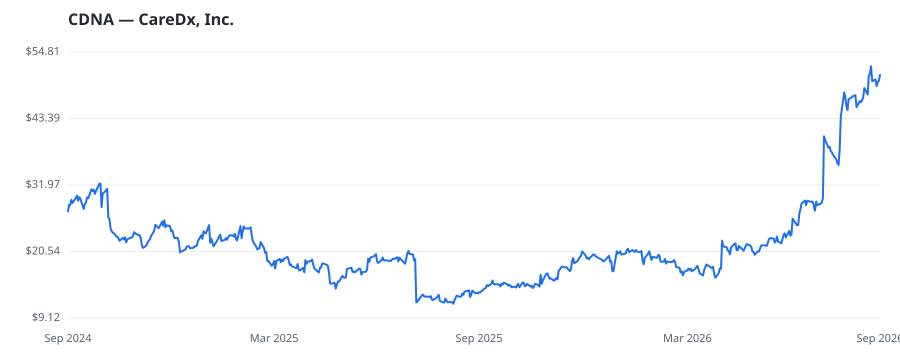

bullish · bearish · n/a — dots: price>SMA10 · SMA10>SMA50 · SMA50>SMA200 · up>down volume (20d)
Health Care Equipment & Services · mid cap

CareDx Inc operates as a precision medicine company focused on the discovery, development, and commercialization of clinically differentiated, high-value healthcare solutions for transplant patients and caregivers. It offers testing services, products, and digital solutions along with the pre- and post-transplant patient journey and is a provider of genomics-based information for transplant patients. The Company's commercially available testing services consist of AlloSure Kidney, AlloMap Heart, AlloSure Heart, a dd-cfDNA solution for heart transplant patients, and AlloSure Lung, a dd-cfDNA so SERVICES-MEDICAL LABORATORIES · website
| Revenue | $379.8M | Net income | $-21.4M |
|---|---|---|---|
| Operating income | $-30.8M | Diluted EPS | $-0.40 |
| Assets | $413.2M | Equity | $303.1M |
This name produced 0.3% of the ranked funds’ total alpha.
🛒 Newly buying: Knott David M Jr (+17%, 0.2% of book)
| Fund | Fund alpha vs SPY | Position | % of book |
|---|---|---|---|
| Ophir Asset Management Pty Ltd | +48% | $36M | 3.0% |
| Blue Water Life Science Advisors, LP | +209% | $34M | 21.4% |
| Meridiem Capital Partners LP | +8% | $13M | 0.6% |
| Zweig-DiMenna Associates LLC | +61% | $11M | 1.0% |
| Knott David M Jr | +17% | $0M | 0.2% |
Hedge data: SEC EDGAR 13F · ranked funds beat SPY in >50% of their quarters · fund alpha = mirror-portfolio return minus SPY.